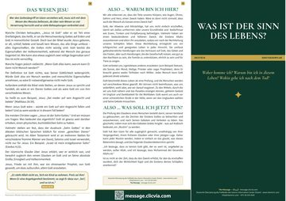

Das Gottesverständnis im Islam
Deutsche Übersetzung des 6-seitigen Faltblatts des Islamic Information Center (Dubai); Koranverse in der offiziellen Übersetzung von Bubenheim und Elyas, Hadithe in inoffizieller Übersetzung.
Niemand ist größer als der Schöpfer – gepriesen und erhaben ist Er.
Gibt es einen Gott?
Es gibt viele vernünftige Beweise, die die Wahrheit des Glaubens an die Existenz eines Gottes für dieses Universum belegen. Drei davon stellen wir im Folgenden vor:
1. Die Ordnung des Universums
Stell dir vor, du gehst an einem langen Strand spazieren und findest eine Uhr im Sand. Du kämest nicht auf den Gedanken, diese Uhr sei durch bloßen Zufall im Sand entstanden oder all ihre komplizierten, ineinandergreifenden Teile hätten sich aus Stoffen tief in der Erde entwickelt. Diese Uhr muss zweifellos einen Hersteller und Schöpfer haben. Und wenn diese Uhr einen Zweck hat – die genaue Zeit anzuzeigen –, dann muss ihr Hersteller notwendigerweise Wissen besitzen; der natürliche Zufall könnte niemals eine Uhr hervorbringen, die mit einem so genauen und bestimmten System funktioniert.
Betrachten wir den Planeten Erde, sehen wir, dass seine Umlaufbahn um die Sonne mit außergewöhnlicher Genauigkeit abgestimmt ist, so dass Wissenschaftler die genauen Zeiten von Sonnenaufgang und Sonnenuntergang im Voraus berechnen können. So wie eine Uhr einen weisen Hersteller braucht, der ihre Zeiten genau festlegt, braucht auch die Erde einen weisen Schöpfer, der die Zeit ihres Umlaufs um die Sonne genau bestimmt hat. Hätte das von selbst geschehen können?
Ebenso: Wenn wir die genauen Systeme und Gesetze in uns selbst und überall in der Welt betrachten, ist es dann nicht vernünftig anzunehmen, dass dieses Universum einen Ordner hat? Und dass die beste Erklärung für diesen „Ordner“ die Existenz eines einzigen mächtigen Gottes ist, der dieses Universum erschaffen und geordnet hat?
2. Der Ursprung des Universums
Die moderne Wissenschaft folgert, dass dieses Universum einen Anfang hatte, gestützt auf die Entdeckung, dass sich das Universum ausdehnt. Würden wir die Zeit zurückdrehen, kehrte das Universum zu dem Punkt zurück, an dem es begann. Für den Ursprung des Universums gibt es drei mögliche Erklärungen:
- 1. Das Universum ist aus dem Nichts entstanden.
- 2. Das Universum hat sich selbst erschaffen.
- 3. Das Universum wurde erschaffen.
Die menschliche Erfahrung lehrt uns, dass Dinge, die einen Anfang haben, nicht aus dem Nichts entstehen können.
Was die zweite Erklärung betrifft, so sagt uns die einfache Logik, dass nichts etwas bewirken kann, bevor es existiert. Das zeigt, dass die dritte Erklärung die einzig vernünftige für den Ursprung des Universums ist: dass ein mächtiger, weiser und allwissender Schöpfergott es erschaffen und geordnet hat.
Manche fragen sich vielleicht: „Wer hat Gott erschaffen?“ Der Schöpfergott ist anders als Seine Geschöpfe. Wäre Er wie die Schöpfung, bräuchte Er einen Gott, der Ihn erschaffen hätte, was zu einer endlosen Kette von Schöpfergöttern führen würde – etwas Unmögliches. Der Schöpfergott steht außerhalb der Grenzen von Zeit und Raum dieses Universums. Er ist ewig, der Erste ohne Anfang und der Letzte ohne Ende. Daher ist die Frage „Wer hat den Schöpfer erschaffen?“ unvernünftig und ohne Logik.
Würde Gott der Menschheit ein Buch der Rechtleitung offenbaren, müsste es klare Beweise für die Existenz Gottes enthalten.
3. Die von Gott gesandte Offenbarung
Und es gibt klare Hinweise darauf, dass das Buch des Islam, der Koran, das Wort Gottes ist. Hier eine kurze Zusammenfassung der Gründe, die das bestätigen:
- Der Koran wurde vor mehr als 1400 Jahren offenbart und enthält dennoch zahlreiche wissenschaftliche Wahrheiten, die den Menschen damals unbekannt waren und erst vor kurzem von der modernen Wissenschaft entdeckt wurden.
- Beispiele dafür sind: dass das Wasser der Ursprung allen Lebens ist (Sure der Propheten, 21:30), die Ausdehnung des Universums (Sure adh-Dhariyat, 51:47) und die eigenen Umlaufbahnen von Sonne und Mond (Sure der Propheten, 21:33).
- Der Koran enthält viele historische Tatsachen, die zu seiner Zeit unbekannt waren, sowie zahlreiche Prophezeiungen, die sich später erfüllt haben.
- Der Koran ist frei von Fehlern und Widersprüchen.
- Der Koran ist seit seiner Offenbarung Wort für Wort in seiner Originalsprache, dem Arabischen, bewahrt worden – anders als andere Bücher, die es in ihrer ursprünglichen Form nicht mehr gibt.
- Er enthält eine klare, reine und universelle Botschaft, die sich an den Verstand und an die grundlegenden Glaubensüberzeugungen über Gott – gepriesen sei Er – richtet.
- Er wurde dem Propheten Muhammad (Friede sei mit ihm) offenbart, der Analphabet war; dennoch zeigt der Koran einen einzigartigen sprachlichen Stil, der weltweit als Gipfel der Ausdruckskraft und Schönheit der arabischen Sprache anerkannt ist.
Die logischste Erklärung für die vielen einzigartigen und wundersamen Seiten des Korans ist, dass er von Gott stammt.
Wer ist Gott?
„Euer Gott ist ein Einziger Gott. Es gibt keinen Gott außer Ihm, dem Allerbarmer, dem Barmherzigen.“
Koran 2:163
„Allah“ ist der Eigenname des einen wahren Gottes, und nichts und niemand sonst darf mit diesem Namen genannt werden. Das Wort hat weder eine Mehrzahl noch eine weibliche Form – anders als das englische Wort God, das eine Mehrzahl (gods) oder eine weibliche Form (goddess) haben kann. Dass der Islam ausschließlich den Begriff „Allah“ verwendet, spiegelt den starken Nachdruck dieser Religion auf den Grundsatz der absoluten Einheit Gottes wider.
Das Schönste am Islam – und alles an ihm ist schön – ist die Anerkennung aller Eigenschaften der Vollkommenheit, Größe und Einheit Gottes. Das zeigt sich deutlich in den islamischen Lehren über Gott, Seine Eigenschaften und Seine Namen.
Gott ist Einer
- Gott hat keine Teilhaber, keinen Seinesgleichen und kein Gegenüber.
- Gott hat weder Vater noch Mutter; Er hat sich weder Sohn noch Tochter noch Gefährtin genommen.
- Nur Gott verdient es, angebetet zu werden.
- Gäbe es mehrere Götter, würde dies ihre Macht und Herrschaft über das Universum beeinträchtigen, denn zwischen ihnen gäbe es unweigerlich Streit oder Konkurrenz.
Gott ist allmächtig
- In Seinen Händen liegen die Schlüssel aller Dinge, und Er hat Macht über alles.
- Alles steht unter Gottes Kontrolle; Er führt jedes Wesen zu seinem Lebensunterhalt.
- Der Gehorsam des Gehorsamen nützt Ihm nicht, und der Ungehorsam des Sünders schadet Ihm nicht.
Gott ist der Hohe und Erhabene
- Nichts steht über Gott, und nichts ist Ihm ähnlich.
- Seine Eigenschaften gleichen nicht denen Seiner Geschöpfe.
- Gott verkörpert sich in keiner Person und in keinem Gegenstand.
- Gott besitzt Eigenschaften der Vollkommenheit und unterliegt nicht menschlichen Grenzen – wie es manche Religionen behaupten, die sagen, Er habe die Himmel und die Erde in sechs Tagen erschaffen und am siebten geruht.
Gott ist gerecht und barmherzig
- Gott muss Sich nicht selbst opfern, um Sünden zu vergeben, denn niemand wird mit einer Schuld geboren, die er nicht begangen hat.
- Gott richtet jeden Menschen allein nach seinen eigenen Taten; jeder ist für sein Tun verantwortlich.
- Die Menschen erlangen Gottes Wohlgefallen durch den Glauben und gute Taten, nicht durch ihr Geschlecht, ihre gesellschaftliche Stellung oder ihren Reichtum.
Das Wesen des Messias (Friede sei mit ihm)
Die meisten Christen glauben, „Jesus ist Gott“, oder er sei einer von dreien, oder er sei die Menschwerdung Gottes auf Erden, also Gott in menschlicher Gestalt.
Doch laut der christlichen Bibel wurde Christus geboren, aß, trank, schlief, betete und besaß kein absolutes Wissen. Diese Eigenschaften passen nicht zu Gott, der vollkommen ist, während der Mensch das genaue Gegenteil ist. Wie kann etwas zugleich zwei völlig gegensätzliche Naturen haben? Das ist nicht vernünftig.
Es ist grundlegend, das wahre Wesen des Messias (Friede sei mit ihm) zu verstehen, wenn man das Gottesverständnis im Islam erklärt, da über seine Person viel Verwirrung herrscht und viele Behauptungen verbreitet sind.
Manche könnten fragen: „Wenn Gott alles kann, warum könnte Er dann nicht in menschlicher Gestalt erscheinen?“
Per Definition tut Gott nichts, was Seinem göttlichen Wesen widerspricht. Würde Gott Mensch werden und menschliche Merkmale annehmen, könnte Er nicht mehr Gott sein.
Außerdem enthält die Bibel zahlreiche Verse, in denen Christus als Diener Gottes spricht und handelt und anerkennt, dass Gott ein von ihm getrenntes Wesen ist.
Zum Beispiel im Johannesevangelium 8:40:
„Nun aber sucht ihr mich zu töten, einen Menschen, der euch die Wahrheit gesagt hat, die er von Gott gehört hat.“
Die meisten Christen glauben, dass Jesus der Sohn Gottes ist. Doch wir müssen uns fragen: Was bedeutet das eigentlich?
Gott ist zweifellos darüber erhaben, einen leiblichen Sohn zu haben. Vielmehr wird der Begriff „Sohn Gottes“ in den ältesten biblischen Sprachen bildlich für „fromme Diener“ verwendet. Im Alten Testament wurde er an vielen Stellen auf gerechte Menschen wie David, Salomo und Israel angewandt – und nicht ausschließlich auf Jesus (Friede sei mit ihm).
Zum Beispiel: „Israel ist mein erstgeborener Sohn“ (2. Mose 4:22).
„Es steht Allah nicht an, Sich ein Kind zu nehmen. Preis sei Ihm! Wenn Er eine Angelegenheit bestimmt, so sagt Er dazu nur: ,Sei!’, und so ist es.“
Koran 19:35
Die islamische Lehre stellt klar, wer Christus (Friede sei mit ihm) wirklich war, und bewahrt den richtigen Glauben an Gott, Seine Größe, Seine Einheit und Seine Vollkommenheit. Christus war ein edler Gesandter, von Gott gesandt, um zur Anbetung des einen Gottes aufzurufen.
Nur Gott verdient Anbetung
„Und dient Allah und gesellt Ihm nichts bei. Und zu den Eltern sollt ihr gütig sein und zu den Verwandten, den Waisen, den Armen, dem verwandten Nachbarn, dem fremden Nachbarn, dem Gefährten zur Seite, dem Sohn des Weges und denen, die eure rechte Hand besitzt. Allah liebt nicht, wer eingebildet und prahlerisch ist,“
Koran 4:36
Die Lehren des Islam beruhen darauf, dass alle Handlungen der Anbetung allein an Gott gerichtet sein müssen. Nichts anderes verdient Anbetung: weder Götzen noch Gräber, weder die Sonne noch der Mond, weder Tiere noch Propheten, weder fromme Menschen noch Engel noch Gelehrte. Sie alle sind erschaffen, begrenzt und unvollkommen, während nur Gott absolute Vollkommenheit besitzt.
Gott wird direkt angebetet, ohne Mittler oder Fürsprecher
Gott braucht weder Teilhaber noch Vermittler. Der Weg zwischen Gott und den Menschen ist offen; jeder kann Ihn direkt anbeten, wie Er es geboten hat. Er hört alle, die Ihn preisen, anrufen und anbeten. Die Anbetung Gottes über Mittler oder angebliche Fürsprecher (wie Götzen oder Statuen) zerstört die Grundlagen der göttlichen Einheit und das alleinige Recht Gottes, angebetet zu werden.
Alle Gesandten riefen zur Anbetung Gottes auf
„Und Wir haben ja bereits in jeder Gemeinschaft einen Gesandten erweckt: Dient Allah und meidet die falschen Götter. Unter ihnen gibt es manche, die Allah rechtgeleitet hat, und unter ihnen gibt es manche, an denen sich das Irregehen bewahrheitet hat. So reist auf der Erde umher und schaut, wie das Ende der Leugner war.“
Koran 16:36
Die Muslime glauben an alle von Gott gesandten Propheten, wie Adam, Noah, Abraham, Moses, Jesus und Muhammad (Friede sei mit ihnen allen). Gott sandte sie alle mit einer einzigen Botschaft: „Betet Gott an; ihr habt keinen anderen Gott außer Ihm.“
Der Sinn des Lebens … ist, Gott anzubeten
Der höchste Zweck unseres Daseins ist es, Gott anzubeten, Seine Einheit in der Göttlichkeit und in der Herrschaft anzuerkennen, Ihn allein anzubeten und allein Sein Wohlgefallen zu suchen.
Der Begriff der Anbetung im Islam beschränkt sich nicht auf Rituale wie das Gebet oder das Fasten, sondern umfasst alles, was Gott liebt und was Ihm gefällt: die Moral der Gerechten, die Taten der Gehorsamen, die Geduld der Arbeitenden und die Güte gegenüber Armen und Bedürftigen.
Fazit:
Die Grundlage des Islam ist der Glaube an die Einheit und Einzigartigkeit Gottes, des Schöpfers und Herrn aller Dinge, der Eigenschaften der Vollkommenheit besitzt und der allein Anbetung verdient. Darin liegen unser Erfolg und unser Glück, in diesem Leben wie im nächsten.
Koranverse: offizielle Übersetzung von Frank Bubenheim und Dr. Nadeem Elyas (quranenc.com).
* Inoffizielle Übersetzung, für dieses Faltblatt angefertigt (Aussprüche des Propheten und frei zitierte Stellen). Offizielle Hadith-Übersetzungen: hadeethenc.com
Deutsche Übersetzung des Faltblatts des Islamic Information Center (Dubai) · www.islamicic.com


Flyer zum Ausdrucken
 Einführung in den Islam: eine praktische und ausgewogene Lebensweise
Einführung in den Islam: eine praktische und ausgewogene LebensweiseDeutsch
 Der Prophet Muhammad: diesen Mann solltest du kennen!
Der Prophet Muhammad: diesen Mann solltest du kennen!Deutsch
 Jesus: ein Prophet Gottes
Jesus: ein Prophet GottesDeutsch
 Der Koran: die letzte Offenbarung an die Menschheit
Der Koran: die letzte Offenbarung an die MenschheitDeutsch

Was ist der Sinn des Lebens?Deutsch
 Missverständnisse über den Islam
Missverständnisse über den IslamDeutsch
 Die Rechte der Frau im Islam
Die Rechte der Frau im IslamDeutsch
 Wissenschaftliche Wunder im Koran
Wissenschaftliche Wunder im KoranDeutsch
 Der Tod und das Jenseits
Der Tod und das JenseitsDeutsch